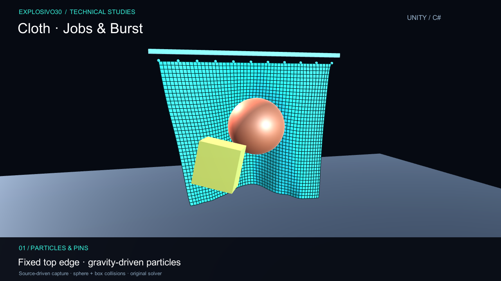
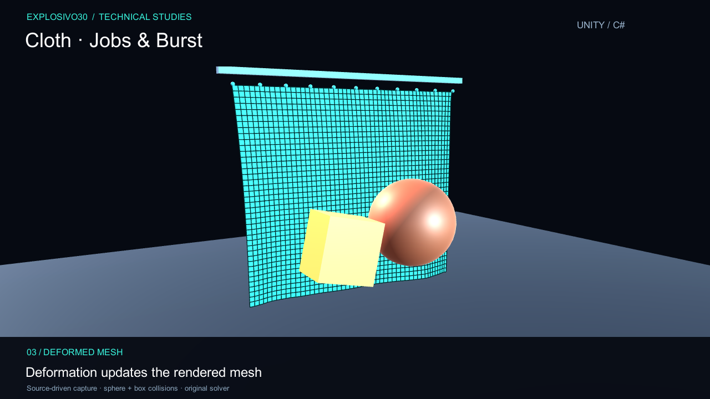

03 / Simulation
Cloth SimulationJobs & Burst
A deformable mesh driven by particles and constraints, with Unity Jobs and Burst used for particle prediction and collision passes.
- Focus
- Physics programming
- Built with
- Unity 6 · C# · Jobs · Burst
- Approach
- Position-based constraints
From mesh to moving fabric
The mesh is converted into particles and distance constraints. Duplicate vertex positions are welded for simulation, while selected particles stay pinned to their attachment points.
Each simulation step predicts particle positions, iterates the spring constraints and resolves sphere and box contacts. NativeArray buffers carry the simulation data. Prediction and collision work run as parallel jobs, with the constraint solve scheduled between them; the completed positions update the visible mesh.
- 01
Attach
Choose fixed particles and build constraints from the mesh.
- 02
Simulate
Predict movement and iterate the dependent solve passes.
- 03
Collide
Resolve sphere and box contacts, then update the surface.


About the demo
This is a Jobs/Burst experiment rather than an Entities ECS system. The presentation demonstrates deformation and contact behavior; it does not claim a performance benchmark, self-collision or production-ready garment simulation.